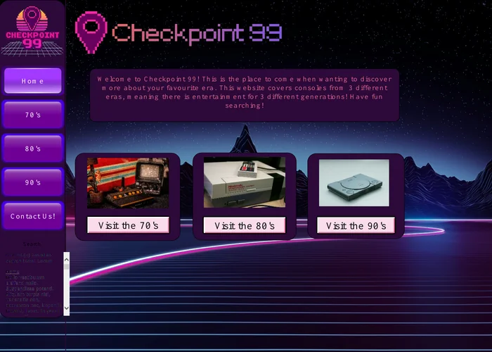
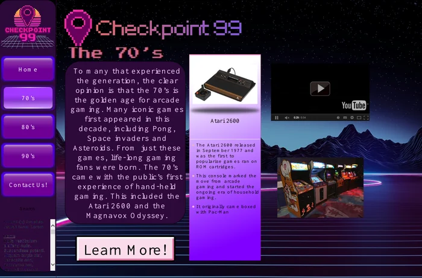

Market research
Analysed three websites with a similar purpose, identifying what worked well and where their user experience could be improved.
Project 02 / IT extended qualification
A retro gaming website that takes visitors through the 1970s, 1980s and 1990s.
The brief
As part of my IT Extended Qualification, I designed a business concept and created the digital assets for Checkpoint 99. The website explores three decades of gaming, with dedicated information for the 70s, 80s and 90s.
I used a synthwave-inspired palette of purple, black and orange to give the site a clear retro identity and make the visual style reflect the subject.
The finished design
These pages show the synthwave identity and decade-based navigation I created for the website. Select an image to see the design at full size.


Design previews from the project PDF. Use the PDF link below to view all seven pages.
Research & development
Analysed three websites with a similar purpose, identifying what worked well and where their user experience could be improved.
Documented my findings in a 6,000-word essay, using the research to inform the direction and features of Checkpoint 99.
Built in a drop-down menu, hamburger menu, rollover images, external links and forms to make the website more useful and engaging.
Created business design assets and applied the purple, black and orange visual system consistently across the website.
Supporting document
The PDF shows the finished design and its pages.